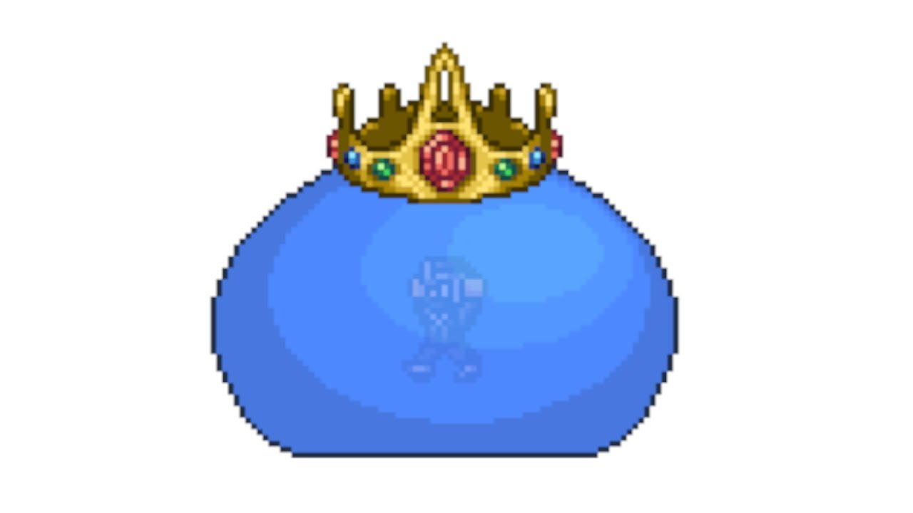

The King Slime can randomly spawn with a 1% chance under these following conditions:
The King Slime can also be spawned if 150 slimes are killed during a Slime Rain event which is signaled with the phrase "Slime is falling from the sky!"
King Slime can be manually summoned using the Slime Crown at anytime of the day
Can be crafted using the following items on a Demon/Crimson Altar
King Slime takes the appearance of a much bigger version of a blue slime. It wears a gold crown on its head and in the middle of the slime, there is a ninja npc trapped inside

"You feel vibrations from deep below..." signals the natural spawning of The Destroyer
Can be summoned using the mechanical worm at night
The destroyer is a mechanical worm-type boss similar to the Eater of Worlds. The Destroyer is made of of multiple segments and each of its segments shoots out lasers and launches out Probes that also shoots out lasers
"The air is getting colder around you..." signals the natural spawning of Skeletron Prime
Can be summoned using the mechanical skull at night
Skeletron Prime is an upgraded version of Skeletron with 4 arms and a cannon, saw, vice, and laser attached to each one respectively. Skeletron Primes attacks by swinging his arms and periodically spinning his spiked head towards the player.